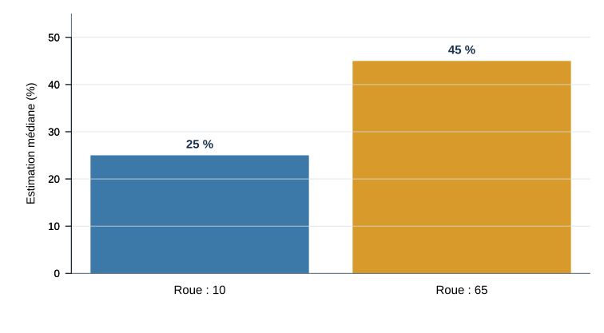

6 octobre — Quiz 4 (1,25 %) : chapitre 4 et cours 4.
Les 8 meilleurs quiz sur 10 comptent pour 10 % de la note finale.
29 septembre — Examen 1 (25 %) : chapitres 1–4 et cours 1–4.
50 % des questions viendront du matériel du cours vu en classe
50 % des questions viendront du matériel du manuel (même si la matière n’a PAS été vue en classe)
Certaines notions enseignées en cours peuvent être évaluées même si elles ne figurent pas sur les diapositives et qu’il s’agisse de quelque chose dont nous avons simplement discuté. Cependant, en majorité, je m’en tiens au manuel et aux diapositives. Toute autre ressource ou lien externe n’est pas matière à examen.
Guide d’étude pour l’examen 1 (25 %)
Le guide d’étude sera disponible plus tard cette semaine.
L’examen aura lieu le 29 septembre et portera sur les chapitres 1–4 et les cours 1–4.
50 % des questions viendront du matériel du cours vu en classe
50 % des questions viendront du matériel du manuel (même si la matière n’a PAS été vue en classe)
Pour le manuel, tous les termes en gras aux chapitres évalués seront possiblement examinés à l’examen, plus tout autre concept, théorie, processus, ou principe essentiel qui est mise en évidence dans les chapitres.
Temps supplémentaire aux examens (25 %)
Si vous avez besoin de temps supplémentaire pour les examens, écrivez dès que possible aux Services à la communauté étudiante — Aide aux besoins particuliers à :
Gardez l’onglet ouvert : les questions apparaitront dans Wooclap au fil de l’activité.
Atelier — l’énigme du « D’accord. »
Votre collègue répond « D’accord. » deux heures après votre demande.
En équipe de 3 ou 4, produisez :
trois interprétations plausibles;
pour chacune, l’indice qui vous y conduit;
une question ou observation qui permettrait de mieux les départager.
Une personne porte-parole présentera votre meilleur test.
Atelier — un canevas pour raisonner
Interprétation
Indice utilisé
Ce qui la distinguerait des autres
Elle est contrariée
Réponse brève
Demander si la demande pose un problème
Elle est pressée
Délai et brièveté
Vérifier sa charge de travail aujourd’hui
Elle répond simplement
Contenu conforme
Comparer à son style habituel de messages
Une bonne vérification peut modifier notre première histoire.
Partie 2 — Juger avec des informations limitées
Deux modes de traitement
Traitement rapide
Traitement plus délibéré
Peu d’effort conscient
Davantage d’attention et d’effort
S’appuie sur associations et habitudes
Compare plus explicitement les possibilités
Utile pour agir vite
Utile lorsque l’enjeu ou l’ambiguïté augmente
Le traitement rapide n’est pas toujours erroné; le traitement délibéré n’est pas infaillible.
Une démonstration collective de l’IAT
Répondez en levant une main aussi rapidement que possible.
La catégorie de gauche correspond à la main gauche.
La catégorie de droite correspond à la main droite.
Une erreur n’a aucune conséquence. Corrigez simplement votre réponse.
Nous cherchons à comprendre la tâche, pas à mesurer votre résultat.
Entraînement 1
MAIN GAUCHE CHAT
MAIN DROITE CHIEN
Deux essais pour prendre le rythme.
Essai
MAIN GAUCHE CHAT
MAIN DROITE CHIEN
MIAOU
Essai
MAIN GAUCHE CHAT
MAIN DROITE CHIEN
CHIOT
Entraînement 2
MAIN GAUCHE MOI
MAIN DROITE AUTRUI
Deux nouveaux essais.
Essai
MAIN GAUCHE MOI
MAIN DROITE AUTRUI
JE
Essai
MAIN GAUCHE MOI
MAIN DROITE AUTRUI
LEUR
Premier jumelage
MAIN GAUCHE CHAT ou MOI
MAIN DROITE CHIEN ou AUTRUI
Même règle, quatre essais rapides.
Essai
MAIN GAUCHE CHAT ou MOI
MAIN DROITE CHIEN ou AUTRUI
CHATON
Essai
MAIN GAUCHE CHAT ou MOI
MAIN DROITE CHIEN ou AUTRUI
JE
Essai
MAIN GAUCHE CHAT ou MOI
MAIN DROITE CHIEN ou AUTRUI
CANIN
Essai
MAIN GAUCHE CHAT ou MOI
MAIN DROITE CHIEN ou AUTRUI
EUX
Jumelage inversé
MAIN GAUCHE CHAT ou AUTRUI
MAIN DROITE CHIEN ou MOI
La règle vient de changer. Quatre autres essais.
Essai
MAIN GAUCHE CHAT ou AUTRUI
MAIN DROITE CHIEN ou MOI
JE
Essai
MAIN GAUCHE CHAT ou AUTRUI
MAIN DROITE CHIEN ou MOI
MIAOU
Essai
MAIN GAUCHE CHAT ou AUTRUI
MAIN DROITE CHIEN ou MOI
LEUR
Essai
MAIN GAUCHE CHAT ou AUTRUI
MAIN DROITE CHIEN ou MOI
CHIOT
Qu’avez-vous remarqué?
Dans quel jumelage avez-vous dû réfléchir davantage, même légèrement?
L’IAT compare la facilité avec laquelle une personne classe des stimuli lorsque deux concepts partagent la même réponse.
Notre démonstration ne mesure aucun effet individuel. Elle comporte trop peu d’essais, ne mesure pas les temps de réponse et impose le même ordre à tout le groupe.
Essayer un véritable IAT
Project Implicit propose plusieurs tests en français.
La participation est volontaire. Les résultats demandent une interprétation prudente et peuvent varier d’une passation à l’autre.
Un continuum de formation d’impression
Catégorisation initiale : une catégorie accessible fournit une première lecture.
Catégorisation confirmatoire : les informations compatibles renforcent cette lecture.
Recatégorisation : une sous-catégorie ou un nouveau schéma intègre les écarts.
Traitement individualisé : les attributs particuliers de la personne dominent le jugement.
Une information difficile à intégrer peut déplacer le traitement vers l’étape suivante.
Plusieurs informations, une seule impression
Deux façons de former une impression :
modèle algébrique : combiner les informations avec un poids différent;
modèle configurationnel : interpréter chaque information à la lumière des autres et d’un schéma global.
Une information négative ou inhabituelle peut recevoir davantage de poids parce qu’elle est plus diagnostique.
Une heuristique
Une heuristique est une règle de jugement simple qui réduit l’effort nécessaire.
Elle peut donner une réponse utile rapidement, mais certains contextes la rendent prévisiblement trompeuse.
Question diagnostique : quelle information remplace-t-on par une information plus facile à utiliser?
Disponibilité : « Est-ce que des exemples me viennent facilement? »
Nous pouvons estimer la fréquence ou la probabilité d’un évènement à partir de la facilité avec laquelle des exemples viennent à l’esprit.
Cette facilité dépend aussi de :
la récence;
la vivacité;
la répétition médiatique;
l’expérience personnelle.
Schwarz et ses collègues (1991) : après avoir rappelé 6 comportements assurés, les personnes se jugeaient plus assurées qu’après avoir peiné à en rappeler 12.
Représentativité : « À quoi ce cas ressemble-t-il? »
Nous pouvons juger qu’un cas appartient à une catégorie parce qu’il ressemble au prototype de cette catégorie.
Deux informations risquent alors d’être négligées :
la fréquence de base des catégories;
la qualité réelle des indices disponibles.
Simulation : « Puis-je facilement imaginer une autre issue? »
Nous pouvons juger une issue à partir de la facilité avec laquelle nous pouvons simuler mentalement ce qui aurait pu arriver.
Une autre issue facile à imaginer peut intensifier :
le regret après une décision;
le soulagement d’avoir évité un résultat;
l’impression qu’un évènement était prévisible.
Ancrage : partir d’une valeur
Une valeur initiale peut servir de point de départ, puis l’ajustement demeure insuffisant.
L’ancre peut venir :
d’une question;
d’un prix affiché;
d’une première estimation;
même d’une valeur arbitraire.
Prédisez le résultat
Tversky et Kahneman (1974)
Une roue s’arrête à 10 ou 65. Les personnes doivent ensuite estimer :
Quel pourcentage des pays membres de l’ONU se trouve en Afrique?
La valeur arbitraire de la roue influencera-t-elle l’estimation médiane?
Une valeur arbitraire déplace le jugement

Roue : 10 → estimation médiane : 25 % Roue : 65 → estimation médiane : 45 %
Redessin original dans R · Valeurs rapportées par Tversky et Kahneman (1974), Science, https://doi.org/10.1126/science.185.4157.1124
Pourquoi l’ancre persiste-t-elle?
Une ancre peut :
fournir un point de départ pour l’ajustement;
rendre accessibles des informations compatibles;
sembler pertinente dans une situation incertaine.
Comparer plusieurs points de référence avant de décider réduit la dépendance à une seule valeur.
Le rôle de l’affect
Nos réactions affectives peuvent fournir rapidement une information de valeur :
attirant ou repoussant;
sûr ou menaçant;
agréable ou désagréable.
L’heuristique affective consiste à utiliser cette réaction comme raccourci pour juger un risque, une préférence ou une décision.
Corriger un premier jugement demande des ressources
Réviser une impression devient plus probable lorsque :
l’enjeu est important;
une contradiction est visible;
nous avons du temps et de l’attention;
une norme nous invite à justifier notre conclusion.
Ralentir aide surtout si l’on sait quoi vérifier.
Une boîte à outils de vérification
Risque
Question à se poser
Première impression dominante
Quelle autre explication est plausible?
Exemple très mémorable
Quelle est la fréquence de base?
Ressemblance convaincante
Quelle est la qualité des indices?
Autre issue facile à imaginer
Quelles autres issues étaient réellement possibles?
Nombre initial saillant
Quelle estimation ferais-je sans ce nombre?
Pause 2 — 10 minutes
Envoyez vos suggestions de chansons ou photos de votre animal de compagnie directement sur Wooclap.
Les schémas, la cible, le percevant et le contexte orientent ce qui devient significatif.
Une impression peut passer de la catégorisation à un traitement plus individualisé.
Les heuristiques et les attentes se vérifient mieux lorsqu’on cherche une information discriminante.
Quiz et examen — quoi préparer?
6 octobre — Quiz 4 (1,25 %) : chapitre 4 et cours 4.
Les 8 meilleurs quiz sur 10 comptent pour 10 % de la note finale.
29 septembre — Examen 1 (25 %) : chapitres 1–4 et cours 1–4.
50 % des questions viendront du matériel du cours vu en classe
50 % des questions viendront du matériel du manuel (même si la matière n’a PAS été vue en classe)
Certaines notions enseignées en cours peuvent être évaluées même si elles ne figurent pas sur les diapositives et qu’il s’agisse de quelque chose dont nous avons simplement discuté. Cependant, en majorité, je m’en tiens au manuel et aux diapositives. Toute autre ressource ou lien externe n’est pas matière à examen.
Après l’examen
6 octobre · L’attribution
Lecture : Vallerand, chapitre 5
Comment expliquons-nous les comportements d’autrui et les nôtres?